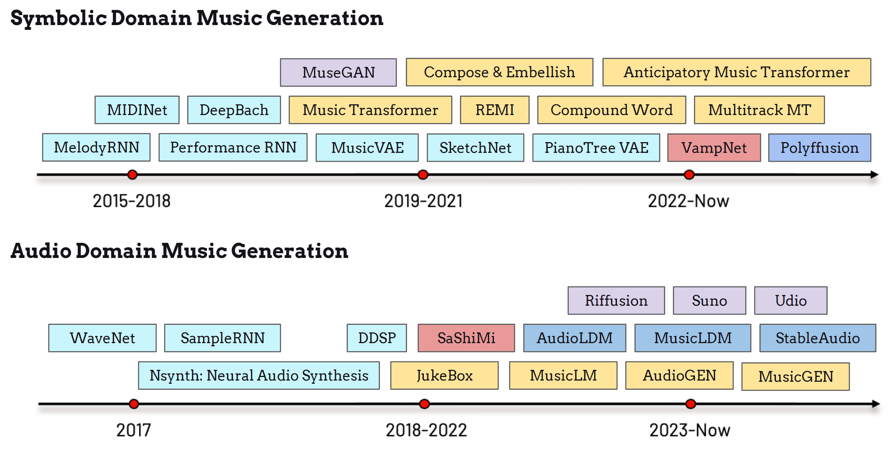

Introduction#
History#
The history of music generation dates back to the 1950s [CN24] originating as algorithmic composition. By the 1990s, researchers began applying neural networks to symbolic music generation [CN24]. Simultaneously, real-time interactive art creation started incorporating music accompaniment, blending generative music with dynamic artistic expression. [CN24].

Since 2015, the exploration of deep-learning models in symbolic and audio-domain music generation has grown rapidly, as shown in the timeline above.
Researchers at Google applied recurrent neural networks (RNNs) to melody generation, encoding melodic notes as distinct states of pitch and duration to enable predictive modeling musicgenerationtemplate.
MidiNet [CN24] and Performance RNN further improved the expressive capabilities of generative models, enhancing articulation and expressivenss in generated music.
Style transfer for specific composers was achieved in DeepBach [CN24], which generated Bach-style chorales in work by Sony CSL.
Breakthroughs in deep generative models soon led to three notable symbolic music generation models, namely MuseGAN [CN24], Music Transformer [CN24], and MusicVAE [CN24], emerging almost simultaneously between 2018 and 2020.
These architectures paved the way for subsequent models focused on higher quality, efficiency, and greater control, such as REMI [CN24], SketchNet [CN24], PianotreeVAE [CN24], Multitrack Music Transformer [CN24] and others.
Recently, the development of diffusion model [CN24] and the masked generative model [CN24] have introduced new paradigms for symbolic music generation. Models such as VampNet [CN24] and Polyfussion [CN24] have expanded the possibilities and inspired further innovation in this field. Additionally, the Anticipatory Music Transformer [CN24] leverages language model architectures to achieve impressive performance across a broad spectrum of symbolic music generation tasks.
Compared to the symbolic music domain, music generation in the audio domain, which focuses on directly generating musical signals, initially faced challenges in generation quality due to data limitations, model architecture constraints, and computational bottlenecks. Early audio generation research primarily focused on speech, exemplified by models like WaveNet [CN24] and SampleRNN [CN24]. Nsynth [CN24], developed by Google Magenta, marked the first project to synthesize musical signals, which later evolved into DDSP [CN24]. OpenAI introduced JukeBox [CN24] to generate music directly from the model without relying on synthesis tools from symbolic music notes. SaShiMi [CN24] applied the structured state-space model (S4) on music generation.
Recently, latent diffusion models have been adapted for audio generation, with models like AudioLDM [CN24], MusicLDM [CN24], Riffusion [CN24], and StableAudio [CN24] leading the way. Language model architectures are also advancing this field, with developments in models such as AudioGen [CN24], MusicLM [CN24], and MusicGen [CN24]. Text-to-music generation has become a trending topic, particularly in generative and multi-modal learning tasks, with contributions from startups like Suno [CN24] and Udio [CN24] also driving this area forward.
In this tutorial, we focus on the audio-domain music generation task, specifically on text-to-music generation. This approach aligns closely with traditional signal-based music understanding, music retrieval tasks, and integrates naturally with language processing, bridging music with natural language inputs.
Problem Definition#

The concept of text-to-music generation is illustrated in the figure above, where the model is trained to learn a probability function that maps a given textual input to a music output. The figure includes examples of possible text descriptions: a simple description might consist of keywords like genre, emotion, instrument, or intended purpose. More complex inputs may be full sentences that convey detailed musical information, such as instrument assignments (pink), key and time signature (blue and green), and “clichés” (yellow). The model aims to accurately encode these textual cues and reflect them in the generated music output.
In the follows sections, we will introduce this topic by first introducing the evaluation of the music generation. Then we go through two representative types of text-to-music models, Autoregressive LM-based architecture (MusicGen [CN24]), and Non-autoregresstive Diffusion-based architecture (StableAudio [CN24]). Finally, we will explore some guiding principles and current limitations of text-to-music models, aiming to enhance the interaction between machine-generated music and human creativity.